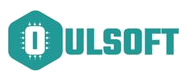
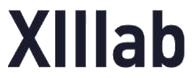
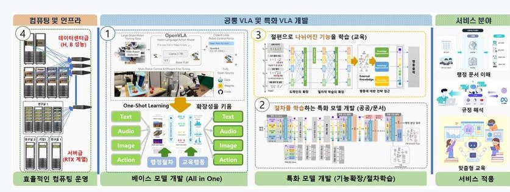

과기정통부 컴퓨팅자원집중형 AI응용기술개발 사업 선정 (2026~2028)
Received Research Fund from the Ministry of Science and ICT (IITP)
분산 GPU 기반 70B급 비전-언어-행동(VLA) 모델 확장 핵심 기술 개발
- 총 60억 원 규모 국책과제 주관
- 70B급 비전-언어-행동(VLA) 파운데이션 + 행정·교육 특화 모델 개발
- 흩어진 GPU 자원을 결집한 국가급 AI 컴퓨팅 인프라 구축


